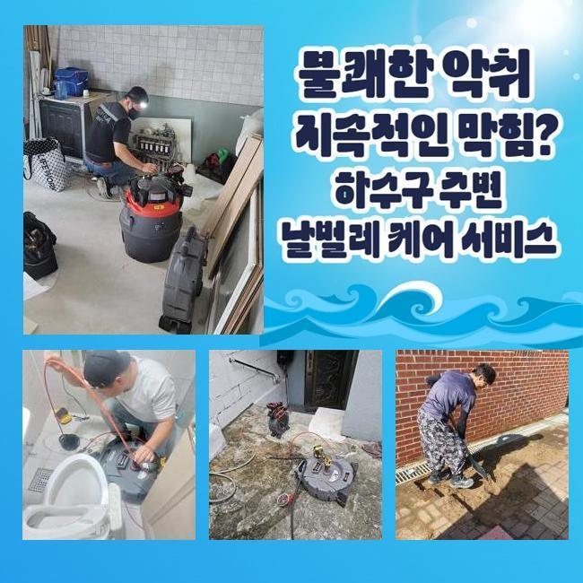
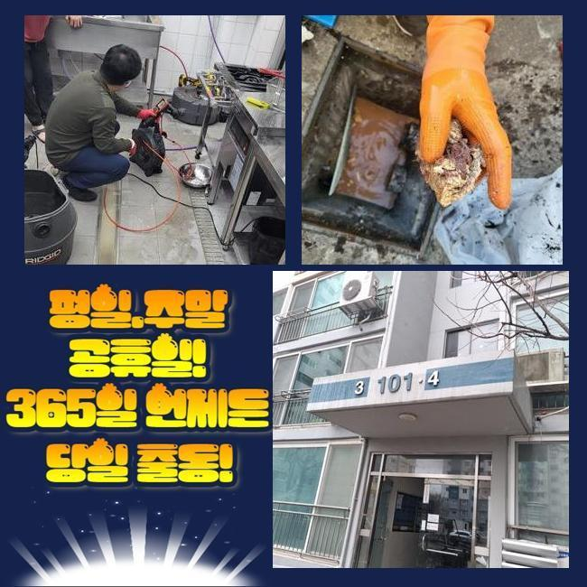
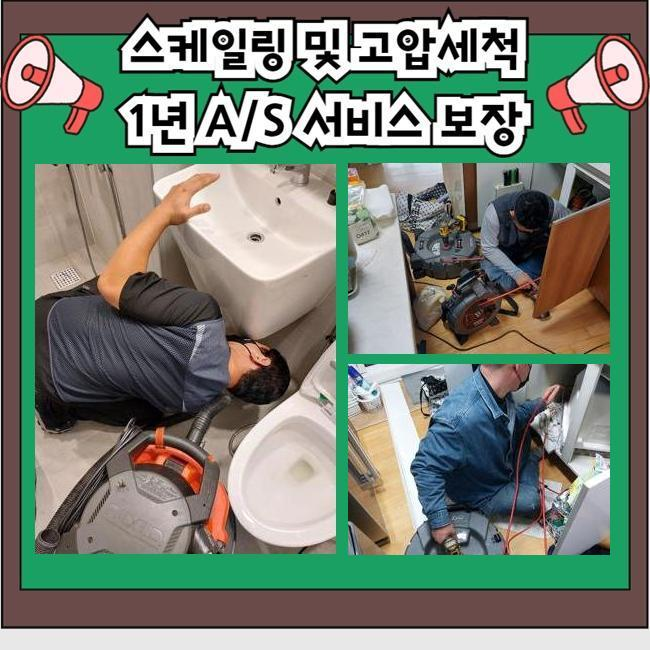
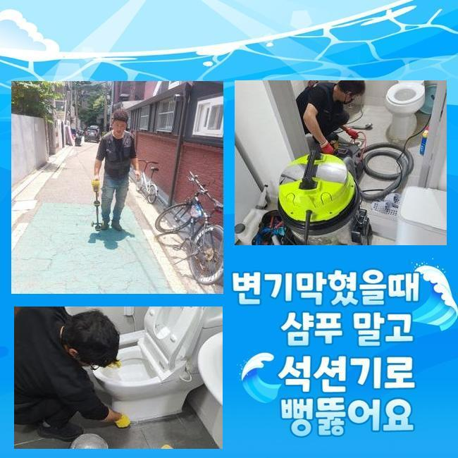
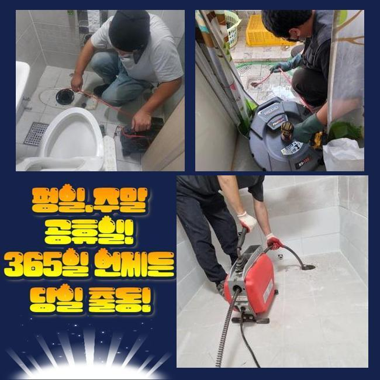
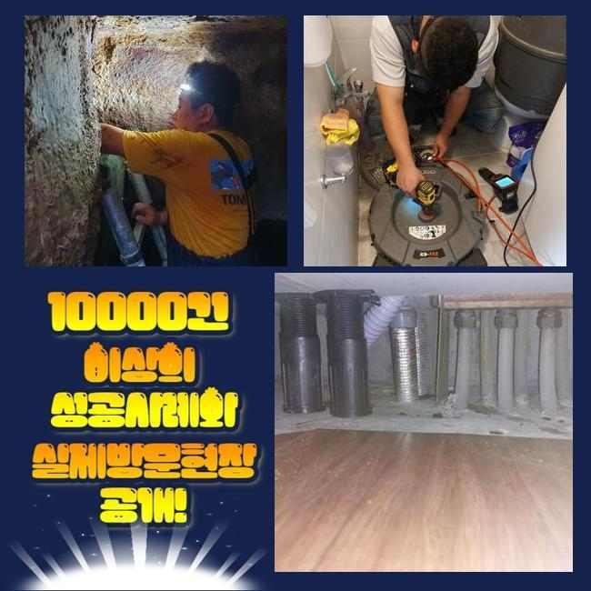
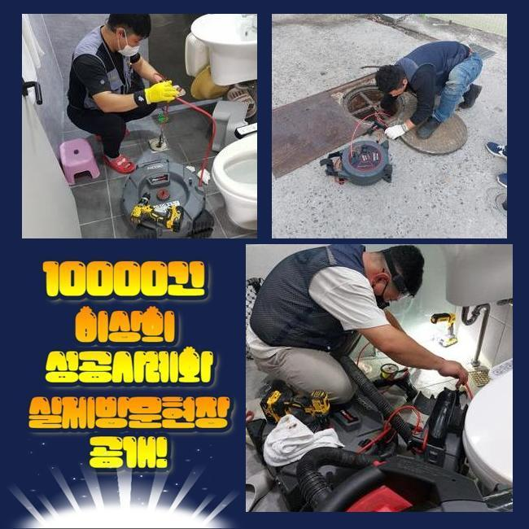

🏠 동작구 노량진동화장실바닥막힘 신대방동 하수구뚫는비용 설비출장
용인 하수구막힘 전문 시공 후기

📋 작업 개요
- 위치: 용인
- 서비스 유형: 하수구막힘, 배관막힘, 맨홀막힘, 역류해결, 뚫는업체, 배관청소, 고압세척, 배관보수, 악취차단
- 작업 일시: 2024. 11. 1. 11:55
- 업체명: 하수구수사대 (010-5615-2118)
🔍 문제 상황
동작구 노량진동화장실바닥막힘 신대방동 하수구뚫는비용 설비출장
더운 날씨가 지속되면서 하수구에서 유발되는 구린내 때문에 마음고생이 이만저만이 아닌 고객님들이 어마어마하게 많아졌습니다
배관을 청소해준다는 특정한 액체나 가루를 넣어보더라도 이렇다할 개선이 되지 않아서 맥이 탁 풀리곤 할 것입니다
배수구의 차단 현상부터 냄새에 관련한 사안도 당장 없애드릴 수 있는 과제이니 후각적인 문제로 난감하시면 저희에게 전화주세요
건물 내부의 하수구 시설은 집안의 여러가지 장소에서부터 주기적으로 찌꺼기들이나 오물들이 줄을 지어 배출됩니다
하수구 청소를 성실히 하더라도 먼지덩어리와 기름 때들이 켜켜이 쌓여나가게 됩니다
장시간 이렇게 저장되다 보면 더욱 밀착되어 말라붙어서 이로 인해 멀쩡한 이동경로가 제한이 걸리고 말아요
이렇게 물길이 느려지다보면 도저히 수습이 안되는 막힘 사태까지 초래할 수 있는데요
배출되는 양상도 부실하게 변하고 고장은 더욱 빈발하며 만일 더욱 심해진다면 내부의 하수가 울컥 역류해요
하수관 속에 고여있던 식자재의 잔해나 유분이 부패하며 미생물의 활동으로 악취를 생성할 때도 많습니다
이 과정에서 벌레까지도 유입될 수 있다보니 매우 위협적인 존재입니다
오늘 사건을 맡겨주신 고객분은 하수구가 차단되는 바람에 사업에도 큰 문제가 생겨서 곤혹스러웠다 하셨어요

🔎 원인 분석
💡 전문가 진단: 정밀 진단 장비를 사용하여 슬러지의 고착 여부를 판명하고 타격/세척 작업을 실시했습니다.
운영을 재개해야 하므로 당장 이곳으로 와주실 수 있냐고 황급히 연락을 주셨어요
음식을 공급하는 업장이라서 가루 수준의 찌꺼기들은 괜찮겠지하는 마음으로 하수관 속에 내려보낸 적이 있다고 하셨어요
이용에 차질이 전혀 없었는데 불현듯 예고도 없이 요리해야 할 조리공간의 하수구가 동시에 차단되었다고 합니다
불쾌한 냄새가 주변을 휘감고 물 자체를 쓰지 못하니까 정상영업이 도통 불가능한 사태임에 절망하셨다고 합니다
신속한 일정 조율로 방문하여 작업의 기초가 되는 관로가 막혀버린 본질적 동기를 발굴해보기로 했습니다
배관 장애는 여러 요인을 이야기할 수 있겠지만 이런 식당들은 보통 거름망을 통과한 작은 찌꺼기들이 유입되면서 봉쇄되어 버리는 상황이 거의 과반수 이상입니다
명확한 현황 판별을 하도록 관로를 선명하게 비춰주는 고급 내시경 도구를 빠짐 없이 이용합니다
어디가 막혔는지 체크해주고 개선 결과가 좋을 전략으로 신속히 대응할 수 있어야 합니다
음식을 대접하는 준비과정 중에 기름기도 물과 휩쓸려 내려가고 계속 겹쳐지면서 슬러지화가 되어버렸음이 보이더라고요
번들대는 기름때들은 뜨거운 물을 강한 힘으로 부어보아도 그다지 변화를 만들지 못하는데 여러 시중의 제품들을 통해 뚫음을 도전하시기도 합니다
분명 실패할 때가 훨씬 많고 약간의 희망이 보이더라도 희망고문이 될 때가 많아요
배관 곳곳을 시원하게 긁어주는 모터 구동 방식의 샤프트라는 도구를 활용하여 전체적인 내부 정화에 임하게 됩니다

🔧 작업 과정
정체를 빚던 수돗물이 통쾌하게 흘러나가는 장면을 보여드렸고 고쳐주신 걸 잘 유지하겠다며 감사한 마음을 알려주셨어요
연달아 고쳐드리기로 약속한 작업지로 가야했기에 에너지를 충전하여 이동했어요
상당히 건물 사이즈가 컸던 대규모 식당이었고 특이한 점은 일반 주택을 개조했다는 점입니다
이번 작업 전에도 몇 회 하수관이 완전 마비되어버려서 전문가를 소환해서 조치했던 일들이 한두번이 아니었다고 합니다
단기간만 경과했음에도 막힘이 재현되어버려서 사실 의구심을 품고 계셨습니다
막막한 심정으로 정보를 찾아보시다가 저희를 자연스럽게 알게 되셨다고 합니다
오랜 기간 의뢰해오신 업체는 높은 수압의 물로 내부 세척을 해서 이물질을 다 처리했다고 말했다는데요
실제로 단 며칠 이전에 청소받아 복구를 시켰다 생각했는데 같은 일이 반복되자 못참고 저희를 찾아주신 것이었어요
막힌 현황이 줄이어 일어나면 더욱 주의 깊은 검사 절차를 거쳐가면서 통찰력있게 다시 스캔을 해주어야 해요
맨홀 내면을 들여다보면서 내외부 각기의 시스템 안에 배관 진단 장치를 동원해서 불량 요소를 추려냅니다
구체적 지점을 잡고 탁월한 동력을 탑재한 기기로 강하게 고정된 유분 찌꺼기를 쪼개 나가기 시작한 것입니다
정성스러운 절차를 통해 막힘을 개통하게 되었고 이내 물이 하강하는 장면을 두눈으로 뚜렷하게 확인했죠
내시경기기가 비춰주는 내부의 현황이 중개가 되었고 오염된 부분들이 사라지는 과정을 바로바로 알려드리기도 했습니다
건물 안의 배관으로 접근해서 흐름을 원만히 풀어드린 것인데 과거도 마찬가지로 이런 청소를 해보신 적이 많았지만 시도 때도없이 막혀버린다는 것은 다른 원인이 있다고 보여서 야외 하수구로 이동하여 살펴봐 드리려고 합니다!
옥외 점검을 거친 결과 더욱 심층적인 구간에서 오류 인자를 색출하게 되었어요
작업장소의 스케일이 남달랐기에 정교한 스케일링 기기만으로는 목표에 도달하는데 큰 장벽을 깨우치실 수 있을겁니다
강한 출력의 고압 세척 장비를 항시 소지하고 있는데 야외는 수작업 기기와 이곳은 고압 세척 기법도 접목해야 나아질 듯 했어요
고객분께 이 부분을 통지하고 이번 업무에 필요한 생활용수를 조달해주고 타겟으로 분사하여 여기저기에 널린 이물질들을 무결점 처리를 완수했습니다!
예상했던 범주를 넘어서는 양의 오물질들이 유발되어서 고객분도 굉장히 놀라시고 저희가 봐도 신기한 장면이었죠
장시간 야외 하수구를 청소해서 마침내 깨끗해진 수돗물이 차오르는 게 보였고 카메라를 밀어넣어서 정리해준 하수관이 업그레이드 됐는지 봐주었습니다


✅ 작업 완료
보이지 않는 사각지대에 석회가 달라붙은 게 목격되어 샤프트와 석션의 병용을 통하여 거대한 하수설비 내를 쾌적하게 구성해 드리게 되었어요
잔해가 전혀 없어야만 문제의 반복이 될 수 있다는 불안감을 경감시켜드릴 수 있으니 시간적으로 더 쓰더라도 시공 완성도에 기여합니다
관로탐지기를 동원하거나 배관 촬영기로 안을 찍어서 사태를 분명히 정리하고 복합적인 오류가 있는 현장이라도 원만한 원상복구를 실시하겠습니다
주택이나 대형마트나 영업장 특수시설이나 야외 등을 두루 보수해 드리고 있으니 하수구 불통이 있는 위치가 평범치 않다고 해도 개의치않고 찾아뵙고 있으니 출동해달라고 호출해 주세요!
구구절절 하실 필요없이 간략한 어떤 증상인지 전달주신다면 구체적인 내역은 직접 보면서 명확히 사태를 판별해서 정상 기능으로 회복시켜 드릴게요!




⚠️ 하수구 배관 막힘 예방 및 관리 가이드
- ✅ 머리카락, 비닐, 물티슈 등 물에 분해되지 않는 이물질은 하수구 유입을 절대 금지해 주세요.
- ✅ 하수구 거름망을 씌우고 모여진 이물질은 주기적으로 쓰레기통에 바로 비워주셔야 합니다.
- ✅ 배관 노후가 심할 경우 이물질이 더 쉽게 걸리므로 주기적인 배관 세척(고압세척 등)을 권장합니다.
- ✅ 작업 후 1년 이내 재발 시 하수구수사대에서 무상 A/S 보증 서비스를 제공합니다.
💡 핵심 정리
- 확실한 장비 작업(내시경 점검 및 샤프트 스케일링)으로 원인을 뿌리 뽑습니다.
- 작업 후 1년 이내에 동일한 부위 재발 시 100% 무상 A/S 서비스를 보장합니다.
- 서울 · 경기 · 인천 전 지역에 24시간 언제든 긴급 출동할 수 있도록 항시 대기 중입니다.
❓ 자주 묻는 질문 (FAQ)
🚨 용인 하수구막힘 문제로 고민이신가요?
정확한 원인 진단과 확실한 시공으로 재발 없는 해결을 약속드립니다.
24시간 긴급 출동 | 서울 · 경기 · 인천 전지역 | 1년 내 재발 시 무상 A/S